3 Données géométriques
Un des grands avantages d’IPUMS International pour l’EE CIST 2023 est constitué par la mise à disposition de fonds de carte au format shapefile dont les codes correspondent avec les variables individuelles poue deux niveaux administratifs en dessous du nivau national. On peut donc théoriquement agréger les données individuelles, en déduire des indicateurs agrégés à deux niveaux administratifs différents et en faire la cartographie. L’objectif de cette note est de vérifier que tout ceci fonctionne bien et que les fonds de carte sont de bonne qualité.
3.1 Accès aux fichiers de géométrie
Une fois que vous êtes connecté en tant qu’utilisateur, vous pouvez accéder aux données géométriques en cliquant dans la barre latérale gauche sur le lien “GEOGRAPHY & GIS” :
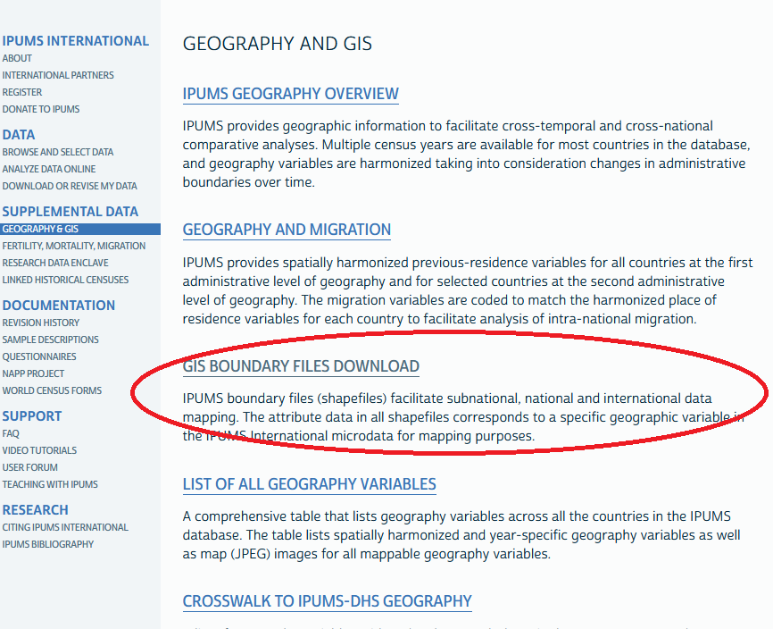
Ce dernier vous conduit à une page comportant de nombreuses possibilités d’obtention de données géométriques pour chacun des recensements de tous les pays à toutes les dates. On utilisera ici uniquement les géométries associées aux données de recensement, mais la page offre d’autres possibilités, notamment pour la constitution de découpages à plusieurs dates ou pour les liens vers les données DHS.
3.2 Téléchargement des géométries de niveau I et II
Pour assurer une correspondance exacte avec les données de recensement, on utilise uniquement les shapefile correspondant aux indicateurs contenus dans les données individuelles :
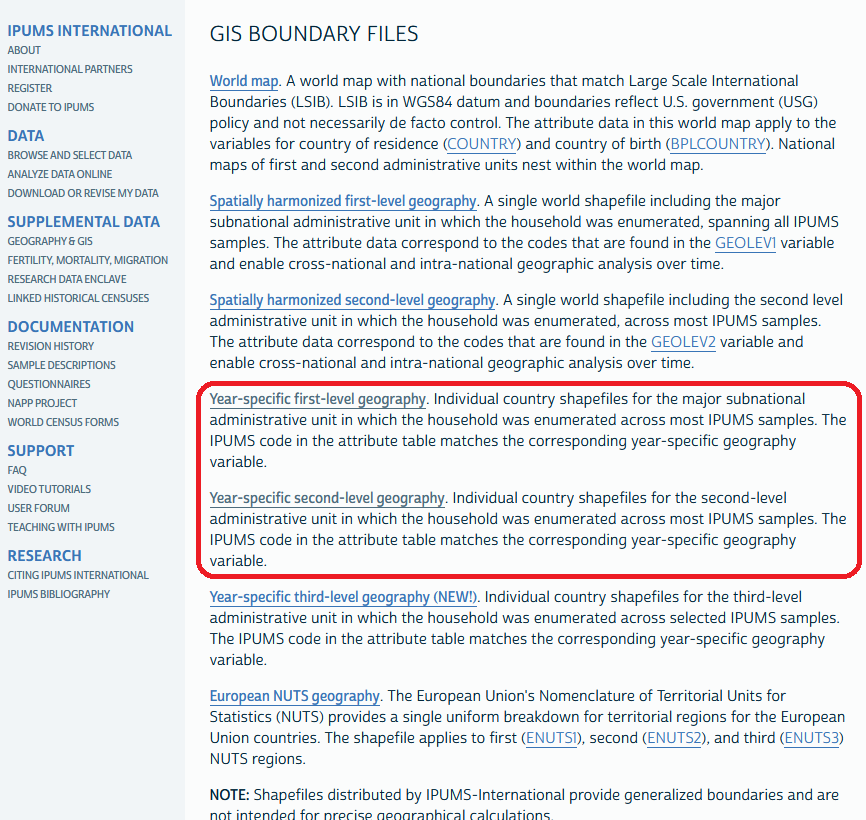
Sur chacune des deux pages on va ensuite télécharger les fonds de carte qui correspondent à des dossiers au format .zip ce qui en réduit la taille. On les décompressera uniquement au moment de leur importation vers R, Qgis ou Geoda.
Au total nous devons récupérer 10 fichiers correspondant aux 2 niveaux de découpages de chacun des 5 recensements pour lesquels nous avons collecté des échantillons de données individuelles.
 - N.B. Chaque fichier correspond à une date précise et un pays précis. Dans le cas d’un pays dont les régions ont change, il faut télécharger autant de fichiers qu’il y a de géométries différentes. Précisons par ailleurs que les fonds de carte proposés sont assez généralisées et ne se prête pas à des opérations précises de repérage de terrain : ils ne servent qu’à visualiser les résultats de recensement.
- N.B. Chaque fichier correspond à une date précise et un pays précis. Dans le cas d’un pays dont les régions ont change, il faut télécharger autant de fichiers qu’il y a de géométries différentes. Précisons par ailleurs que les fonds de carte proposés sont assez généralisées et ne se prête pas à des opérations précises de repérage de terrain : ils ne servent qu’à visualiser les résultats de recensement.
3.3 Conversion au format sf
Les fichiers obtenus sont directement utilisables par Qgis ou GeoDa mais ils doivent être convertis au format sf pour être utilisés dans R. On peut utiliser pour cela un programme qui automatise la tâche du type de celui qui est présenté ci-dessous pour le Burkina et qui sera ensuite appliqué à tous les autres recensements :
3.3.1 Bénin, 2013
library(sf)Linking to GEOS 3.9.1, GDAL 3.4.3, PROJ 7.2.1; sf_use_s2() is TRUEcensus="bj2013"
unzip(paste0("ipums/geom/geo1_",census,".zip"), exdir="ipums/geom/tmp")
map1<-st_read(paste0("ipums/geom/tmp/geo1_",census,".shp"),quiet=T)
saveRDS(map1,paste0("ipums/geom/geo1_",census,".RDS"))
unzip(paste0("ipums/geom/geo2_",census,".zip"), exdir="ipums/geom/tmp")
map2<-st_read(paste0("ipums/geom/tmp/geo2_",census,".shp"),quiet=T)
saveRDS(map2,paste0("ipums/geom/geo2_",census,".RDS"))
par(mar=c(0,0,2,0))
plot(map2$geometry, col="lightyellow", border="gray80", lwd=0.4, main=census)
plot(map1$geometry,add=T, col=NA, border = "black",lwd=0.8)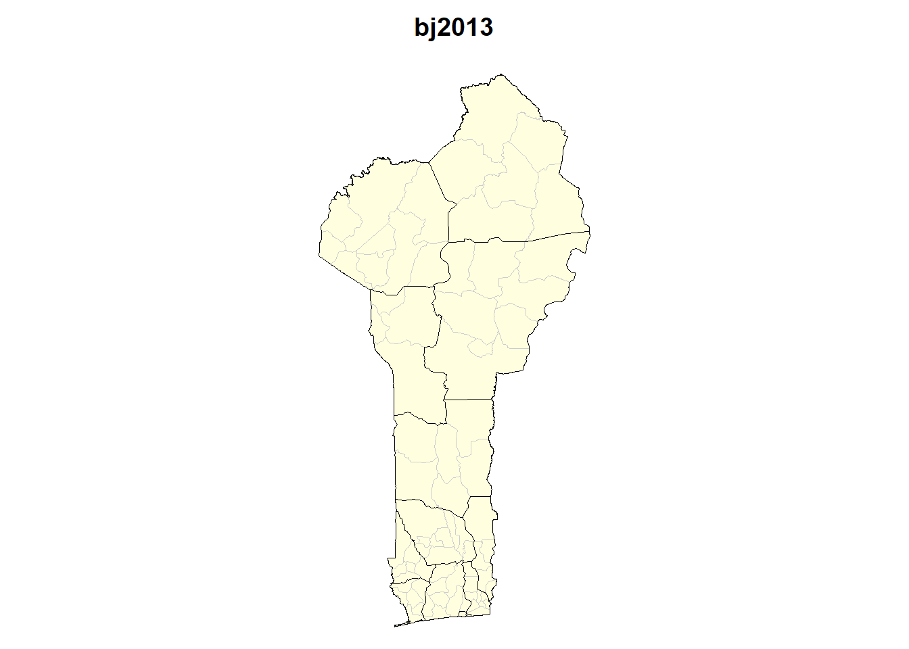
3.3.2 Burkina Faso 2006
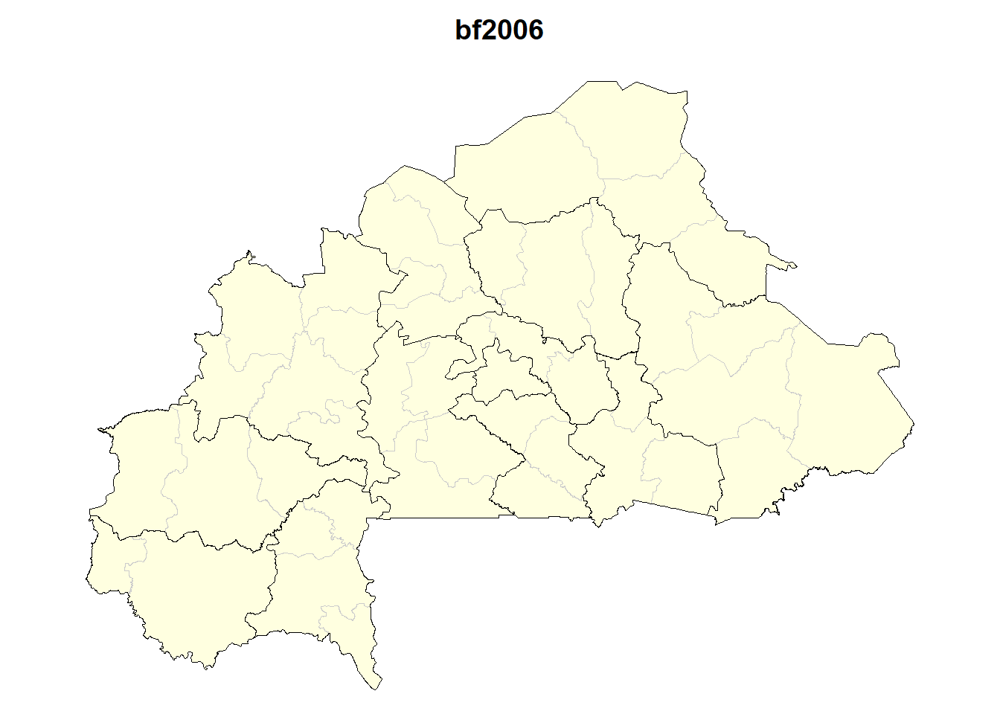
3.3.3 Mali 2009
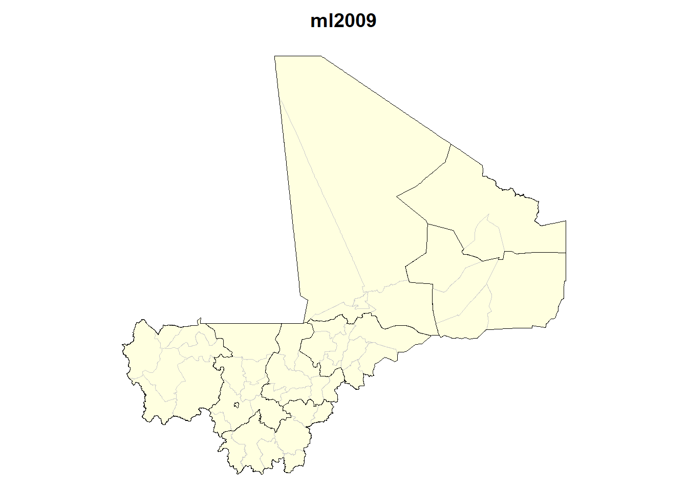
3.3.4 Sénégal 2013
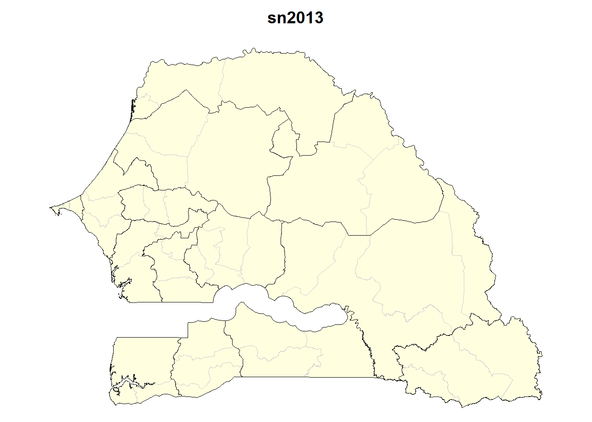
3.3.5 Togo 2010

3.4 Géométries harmonisées dans le temps
IPUMS propose pour chaque pays des géométries harmonisées permettant de comparer les situations à plusieurs dates et, du même coup, de procéder à des analyses de migrations. La résolution spatiale est évidemment plus faible mais l’intérêt beaucoup plus grand en terme d’utilisations pédagogiques multiples.
3.4.1 Bénin, 1979-2013
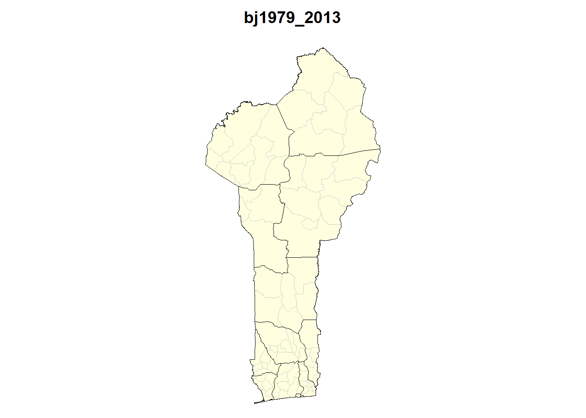
3.4.2 Burkina_Faso, 1996-2006
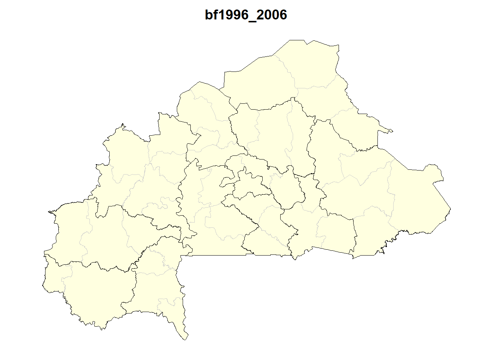
3.4.3 Mali, 1987-2009
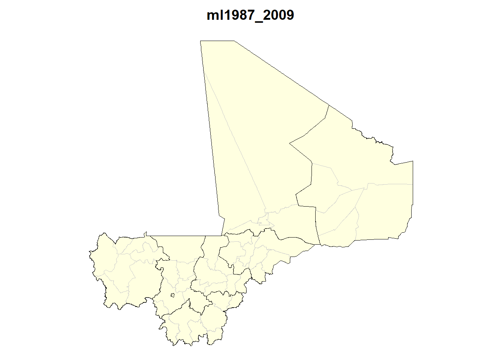
3.4.4 Sénégal 1988-2013
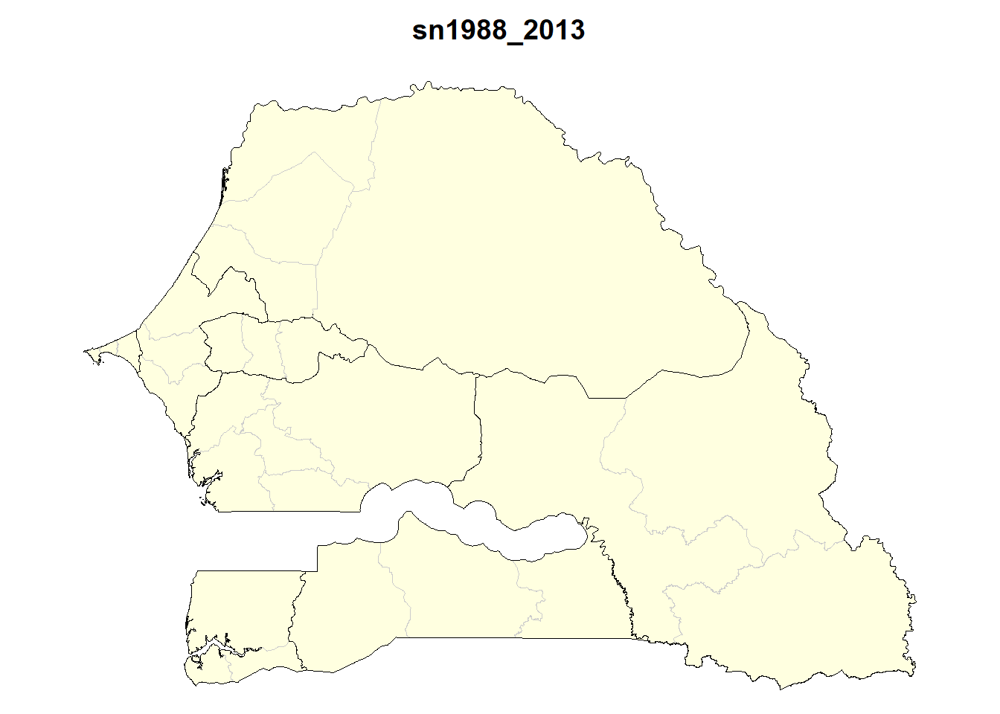
3.4.5 Togo 1970-2010
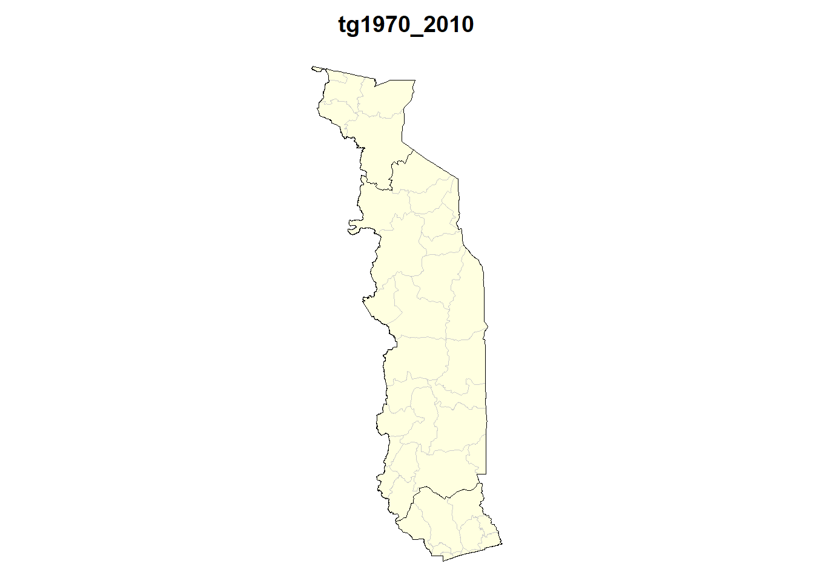